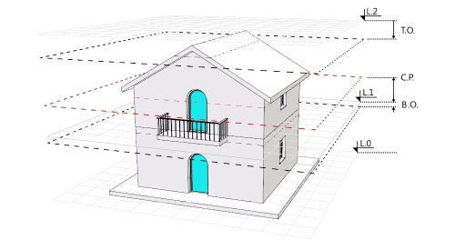

Clavier :
vaNiveaux
Icône :
 clic
clic

Menu :
La commande vaNiveaux ouvre une boîte de dialogue Gestionnaire de niveaux à partir de laquelle il est possible de créer, supprimer et modifier des bâtiments et des niveaux.
Dans la boîte de dialogue Gestionnaire de niveaux, vous pouvez contrôler le PlanC (plan de construction), la visibilité ainsi que les valeurs d'Élévation et de Plan de coupe de chaque niveau.
La boîte de dialogue du gestionnaire de niveaux est divisée en deux parties :

Boîte de dialogue du gestionnaire de niveaux.

Paramètres du Niveau "1" :
 |
Crée de nouveaux bâtiments dans lesquels des niveaux pourront être ajoutés. Chaque bâtiment possède sa propre valeur d'élévation ; les valeurs d'élévation des niveaux intérieurs sont relatives à ce bâtiment. |
 |
Ajoute un nouveau niveau au bâtiment sélectionné. Le nouveau niveau sera automatiquement créé au-dessus du niveau le plus haut et son élévation par défaut sera la même que celle du niveau précédent. Il est nécessaire d'avoir un bâtiment pour pouvoir créer des niveaux. |
 |
Supprime un niveau ou un bâtiment. Les objets de Rhino et de VisualARQ contenus dans le niveau ou le bâtiment supprimés ne sont pas modifiés. Ils restent au même endroit. |
Le plan de coupe représente un plan de section horizontale propre à chaque niveau, situé à une hauteur déterminée à partir de l'élévation de chaque niveau. Le bouton Plan de coupe active et désactive le Plan de coupe du niveau sélectionné dans la fenêtre active. Un bâtiment et un niveau doivent être créés pour activer le Plan de coupe.
Lorsque le Plan de coupe est activé pour un certain niveau dans la fenêtre active, tout ce qui se trouve au-dessus du plan de coupe de ce niveau ne sera PAS affiché.
Lorsque le plan de coupe est activé dans la fenêtre Dessus, les objets de VisualARQ, telles que les portes, les fenêtres, les escaliers, etc. seront dessinés avec leur représentation de vue en plan 2D.
 |
Plan de coupe activé : la fenêtre affiche le niveau sectionné en fonction de la position de son plan de coupe. |
 |
Plan de coupe désactivé : La fenêtre affiche le niveau dans son ensemble (en fonction de l'option de visibilité). |
 |
Plan de coupe désactivé : Vous devez sélectionner un niveau pour activer son plan de coupe. |

Vue du Niveau 0 et du Niveau 1 alors que le Plan de coupe du Niveau 1 est activé.

Vue du Niveau 0 et du Niveau 1 alors que le Plan de coupe du Niveau 1 est désactivé. (le Niveau 2 n'est plus visible)

Vue du Niveau 1 uniquement avec le plan de coupe désactivé. (Les Niveaux 0 et 2 ne sont pas visibles)
 |
Le plan de construction détermine l'élévation du plan sur lequel vous travaillez. Cliquez sur l'icône du plan de construction d'un niveau pour déplacer le plan de construction à l'élévation de ce niveau dans la fenêtre active. |
Le paramètre de visibilité permet d'afficher ou de masquer les objets ou les parties d'objets situés entre l'élévation du niveau actuel et l'élévation du niveau le plus haut (en tenant compte des valeurs de décalage supérieure et inférieure).
 |
Le niveau est visible et vous pouvez voir les objets ou les parties d'objets se trouvant sur ce niveau. |
 |
Le niveau n'est pas visible et vous ne pouvez pas avoir les objets se trouvant sur ce niveau. |
Remarque: les niveaux intermédiaires ne peuvent pas être cachés individuellement. Lorsqu'un niveau intermédiaire est caché, tous les autres niveaux situés en-dessous seront cachés automatiquement.
La vue en plan affiche la représentation 2D d'un niveau dans le plan de construction de la fenêtre active. Cette représentation 2D ne peut pas être modifiée et n'affiche que les objets sectionnés dans le plan sélectionné, en fonction de la position du plan de coupe dans ce niveau.
 |
La représentation 2D du niveau sélectionné est visible dans le plan de construction de la fenêtre active. |
 |
La représentation 2D du niveau sélectionné n'est pas visible dans le plan de construction de la fenêtre active. |
Pour définir le niveau correspondant à l'étage actuel dans la fenêtre active, double-cliquez sur le nom du niveau. Cette opération placera le plan de construction sur le niveau sélectionné et activera ce niveau s'il ne l'était pas déjà.
La valeur de l'élévation indique la hauteur de base de chaque bâtiment ou niveau ainsi que la position d'un plan de construction par rapport à chaque bâtiment ou niveau. Elle détermine quelle partie du modèle correspond à chaque niveau. Les valeurs d'élévation sur les niveau sont indiquées en fonction de la hauteur d'élévation du bâtiment. La valeur d'élévation du bâtiment est mesurée le long de l'axedes z du document.

La marque d'élévation du niveau actuel et mise en surbrillance.
Le plan de coupe détermine l'élévation de la section horizontale de chaque étage, en d'autres termes, seuls les objets se trouvant à cette élévation ou juste en dessous sont inclus dans la représentation.
REMARQUE : Lorsqu'une fenêtre est affichée avec le mode de vue en plan de VisualARQ, la vue de Dessus est établie et le mode d'affichage "caché" est défini. Tant que le mode de vue en plan est activé, la fenêtre affichera le mode d'affichage sélectionné même si vous activez la vue de niveau.
Le décalage supérieur détermine la valeur ajoutée ou déduite à la limite supérieure du niveau lorsque des niveaux entiers sont cachés. Cette option est particulièrement utile lorsque vous cachez la partie supérieure d'un bâtiment et que vous souhaitez cacher également la dalle supérieure du dernier niveau montré. Cette valeur n'a aucune signification pour le niveau supérieur d'un bâtiment et ne concerne que les fenêtres dont le plan de coupe est désactivé.
Le décalage inférieur détermine la valeur ajoutée ou déduite à la limite inférieure du niveau lorsque des niveaux entiers sont cachés. Cette option est particulièrement utile lorsque vous cachez la partie inférieure d'un bâtiment et que vous souhaitez cacher également la dalle inférieure du dernier niveau montré. Cette valeur n'a aucune signification pour le niveau inférieur d'un bâtiment et ne concerne que les fenêtres dont le plan de coupe est désactivé.